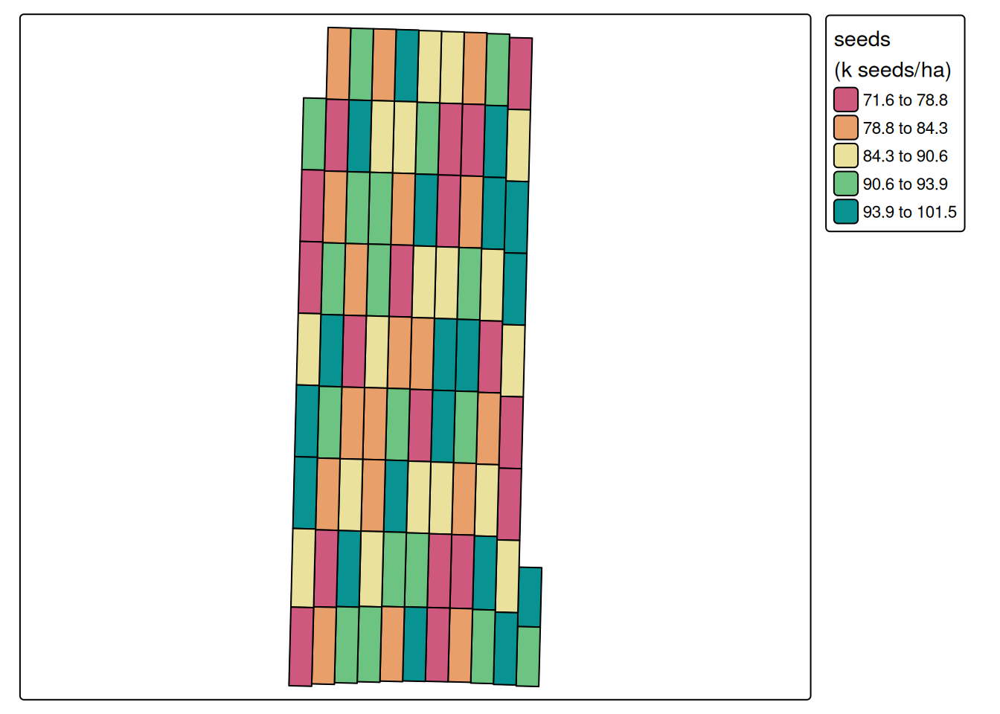

install.packages('sf')
## we will install pacu from GitHub because of some newly added features
## version 0.1.70
remotes::install_github('cldossantos/pacu')Introduction
In the context of on-farm research, we often apply treatments using variable rate applicators to investigate how these different treatments will affect crop yield. An important piece of extracting treatment effects is to process the “as-applied” or “as-planted” data, in the cases of fertilizer and planting data, respectively.
We have just released a new function called pa_trial, to process these data. The function can help us process as-applied data and aggregate these data at the level of experimental unit, so we can model the yield response to treatment.
The pa_trial function is still experimental, and we are still testing it and making sure that the function arguments are intuitive for general use. These might change in the development version but, when we release a final version to CRAN, these will be set. If you use the package and find any issues with the pa_trial function, please report it to us so we can fix it.
Installing the necessary packages
The pa_trial function can be found in the development version of pacu on GitHub. We will use two libraries for this example, pacu and sf. In case you do not have them installed, you can install them using the following code chunk
Let’s load the libraries:
library(sf)
library(pacu)Reading the data in
For this example, we will use three simulated data sets that were built for this example. These data simulate a maize on-farm experiment that had both nitrogen and seeding rate treatments. In this particular case, I simulated an existing relationship between yield and nitrogen, but no relationship between yield and seeding rate. Let’s see if we can recover these relationships!
Here, all the raw data that we will use in this example:
- Trial design: This data set contains the geometries and prescriptions for nitrogen and seeding rates
- As-planted: This data set comes from the planter’s monitor and shows what was the planted population at each data point
- As-applied nitrogen: This data set comes from the variable rate applicator and contains the applied nitrogen rate at each data point
- Raw yield: Data from the yield monitor showing the yield registered at each data point
trial.design <- st_read('./raw-data/trial-design.shp')
planted.seed <- st_read('./raw-data/as-planted.shp')
applied.n <- st_read('./raw-data/as-applied-nitrogen.shp')
raw.yield <- st_read('./raw-data/synthetic-raw-yield.shp')Taking a first look at the data
As-planted
Let’s take a look at the planter’s data, which shows the seeding rate at each point. To facilitate visualization, let’s include the trial design grid as well.
plot(planted.seed['plant_pop_'],
main = 'Seeding density (k seeds/ac)',
cex = 0.5,
pch = 16,
reset = FALSE)
plot(st_geometry(trial.design), add = TRUE)As-applied nitrogen
Let’s take a look at the variable rate applicator’s data. This data shows how much urea was applied at each data point.
plot(applied.n['appliedrt'],
main = 'Applied Urea (lb/ac)',
cex = 0.5,
pch = 16,
reset = FALSE)
plot(st_geometry(trial.design), add = TRUE)Raw yield
Let’s take a look at the yield monitor’s data. This will tell us what was the yield at each data point.
plot(raw.yield['Yield'],
main = 'Maize yield (bu/ac)',
cex = 0.3,
pch = 16,
reset = FALSE)
plot(st_geometry(trial.design), add = TRUE)Bringing these datasets together
Now that we have seen each data set separately, we need to bring these data sets together so we can investigate the relationship between our imposed treatments and yield. To do that, we will process both the variable rate and the planter data using pa_trial, and then we will process the yield monitor data using pa_yield. For all the next steps, we will use the ritas algorithm. You can find more information about how we implemented this algorithm in the original publication of pacu.
Before we process these data, I will remove the big bordering area around our experimental plots just to reduce the amount of data we will process. This can be done before or after processing the data but doing it before, saves you some processing time.
trial.design <- subset(trial.design, type == 'Trial')
plot(st_geometry(trial.design))As-planted
Here, we will use pa_trial to process the as-planted data. The function requires the user to specify which column in the input data set corresponds to the “trial” column. In this case, the seeding density is in a column called plant_pop_. I am also specifying that the units of the planter’s width are “ft”. I use a conversion factor of 2.47 to convert from acre to hectare as well.
processed.seed <- pa_trial(planted.seed,
data.columns = c(trial = 'plant_pop_'),
data.units = c(trial = 'k seeds/ac',
width = 'ft'),
grid = trial.design,
algorithm = 'ritas',
var.label = 'seeds',
conversion.factor = 2.47,
out.units = 'k seeds/ha',
verbose = FALSE, ## suppressing progress bar
cores = 6) ## for speedGuessing units of angle to be degreeNGuessing units of distance to be ftUsing pa_trial, we aggregated the seed data at the level of experimental unit, as can be seen below.
pa_plot(processed.seed)
As-applied nitrogen
Here, we will follow the same process that we used to process the seeding density data set. The one difference is that the conversion factors change. Since the nitrogen data is as urea, we will use a conversion factor of 0.45 to reflect the nitrogen content in the urea, and then 1.12 to convert from \(lb.ac^{-1}\) to \(kg.ha^{-1}\).
processed.nitrogen <- pa_trial(applied.n,
data.columns = c(trial = 'appliedrt'),
data.units = c(trial = 'lb Urea/ac',
width = 'ft'),
grid = trial.design,
algorithm = 'ritas',
var.label = 'nitrogen',
conversion.factor = 0.45 * 1.12,
out.units = 'kg N/ha',
verbose = 0,
cores = 6)Guessing units of angle to be degreeNGuessing units of distance to be ftUsing pa_trial, we aggregated the nitrogen data at the level of experimental unit, as can be seen below.
pa_plot(processed.nitrogen)
Merging the treatment datasets
Now that both treatment data sets are processed, we can combine them into a single object.
treatments <- merge(processed.nitrogen, processed.seed)
print(treatments)Variables in trial object:
------------------------------------------
Variable Algorithm Smoothing Units
--- --- --- ---
nitrogen ritas none kg N/ha
seeds ritas none k seeds/ha
------------------------------------------
Variable summary:
------------------------
nitrogen seeds
--- --- ---
Min. 59.315087 71.610
1st Qt. 83.723312 80.764
Median 109.88047 86.883
3rd Qt. 132.25985 93.063
Max. 160.26292 101.50
Mean 108.21485 87.039
NAs 0 0
------------------------pa_plot(treatments)Yield monitor data
After processing all the treatment data, we can pass the treatments object to the “grid” argument and the resulting object will contain all the information regarding treatments and yield. The pa_yield function will try to guess the units of the variables it uses to process the yield monitor data. Pay attention to these and, in case they are not correct, you can override the guess by passing the argument “data.units”.
processed.yield <- pa_yield(raw.yield,
grid = treatments,
algorithm = 'ritas',
formula = z ~ fid,
smooth.method = 'krige',
unit.system = 'metric',
remove.crossed.polygons = TRUE,
steps = TRUE,
verbose = FALSE,
cores = 6)Guessing units of interval to be sGuessing units of moisture to be %Guessing units of flow to be lb/sGuessing units of angle to be degreeNGuessing units of width to be ftGuessing units of distance to be ftWe can see the processed yield data below
pa_plot(processed.yield)Looking at the relationships between yield and the treatment variables
Below, we can examine the relationship between yield and both treatment variables: nitrogen and seeding rate. The next steps are really independent from pacu. One can choose to model these data using whatever modeling framework they are most comfortable with, or judge the most adequate. Since the idea of this post is to demonstrate how pacu can aid in analyzing on-farm experimental data, I will stop here.
with(processed.yield$yield,
plot(nitrogen,
yield,
col = 4,
xlab = 'Nitrogen rate (kg N/ha)',
ylab = 'Yield (t/ha)'))with(processed.yield$yield,
plot(seeds,
yield,
col = 4,
xlab = 'Seeding rate (k seeds/ha)',
ylab = 'Yield (t/ha)'))Conclusion
In this post we saw how the new pa_trial function can be used to process as-applied data from variable rate technologies in on-farm trials. We showed how to aggregate planting and nitrogen application data to the level of the experimental unit and combine them with yield monitor data for further analysis.
By doing so, we can move beyond simply knowing what was intended in an experimental design to understanding what was actually applied in the field—an important distinction when modeling treatment effects in precision agriculture.
If you have to process some of these data, you should definitely give pacu a try and let me know how it goes! We’ll be back with more updates on pacu soon! Stay tuned!